These exercises give you an opportunity to consolidate everything covered in Topic 4 before moving on. Many of these combine skills from several videos into a single task, and some may introduce new tools that were not shown in the videos — for these, you are expected to look up the documentation yourself, the same way you would when working independently.
The exercises are organised into three levels:
🟢 Warm-up — single-skill exercises to check your understanding of the basics.
🟡 Practice — exercises that combine two or more topics.
🔴 Challenge — multi-step tasks that may require you to combine ideas in ways you have not seen before.
🟢 Warm-up
Exercise 4.11.1
Use the FRED monthly data to practice the basic single-line chart pattern.
import pandas as pdimport matplotlib.pyplot as plturl ="https://raw.githubusercontent.com/isabelhovdahl/skl401/refs/heads/master/data/FRED/FRED_monthly_2010.csv"fred = pd.read_csv(url)
Create a Figure and Axes with figsize=(10, 5).
Plot DATE on the x-axis and UNRATE on the y-axis.
Add axis labels and a title.
In which year within this decade does unemployment appear highest?
Unemployment is highest at the very start of the decade, in 2010, reflecting the aftermath of the 2008 financial crisis. It then falls steadily throughout the rest of the decade.
Exercise 4.11.2
Use the same FRED monthly data from exercise 4.11.1 to practice a basic scatter plot.
Create a Figure and Axes with figsize=(8, 6).
Plot UNRATE on the x-axis and FEDFUNDS on the y-axis using ax.scatter().
Add axis labels and a title.
In your own words, describe the relationship shown in the chart. Is it positive, negative, or is there no clear relationship?
Solution
import pandas as pdimport matplotlib.pyplot as plturl ="https://raw.githubusercontent.com/isabelhovdahl/skl401/refs/heads/master/data/FRED/FRED_monthly_2010.csv"fred = pd.read_csv(url)fig, ax = plt.subplots(figsize=(8, 6))ax.scatter(fred["UNRATE"], fred["FEDFUNDS"])ax.set_xlabel("Unemployment rate (%)")ax.set_ylabel("Federal funds rate (%)")ax.set_title("Unemployment vs federal funds rate, 2010–2019")plt.tight_layout()plt.show()
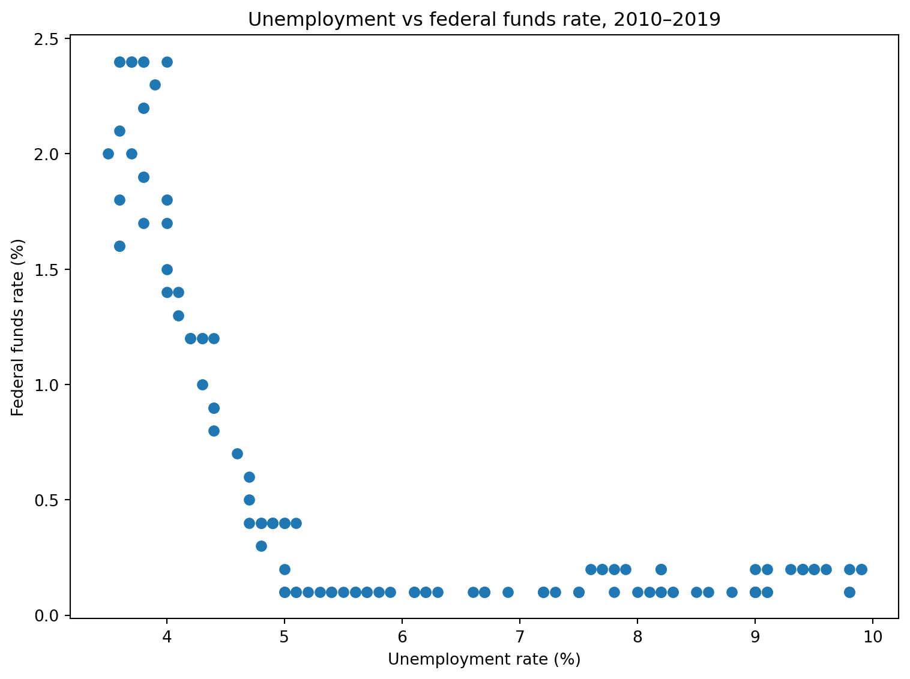
The relationship is clearly negative: months with higher unemployment tend to have a lower federal funds rate, and vice versa. This is consistent with the Federal Reserve’s typical approach of cutting interest rates when unemployment is high to stimulate the economy, and raising rates once unemployment falls and the labour market strengthens.
Exercise 4.11.3
Practice preparing data for a bar chart using a summary statistic.
import pandas as pdimport matplotlib.pyplot as plthealthexp = pd.read_csv("data/healthexp.csv")
Compute the median (not mean) health spending for each country.
Sort the result so the highest-spending country appears first.
Create a Figure and Axes with figsize=(8, 5) and plot the result as a vertical bar chart.
Add axis labels and a title that makes clear you are showing the median.
Solution
import pandas as pdimport matplotlib.pyplot as plthealthexp = pd.read_csv("data/healthexp.csv")median_spending = ( healthexp.groupby("Country")["Spending_USD"] .median() .sort_values(ascending=False))fig, ax = plt.subplots(figsize=(8, 5))ax.bar(median_spending.index, median_spending.values)ax.set_xlabel("Country")ax.set_ylabel("Median health spending per capita (USD)")ax.set_title("Median health spending by country")plt.tight_layout()plt.show()
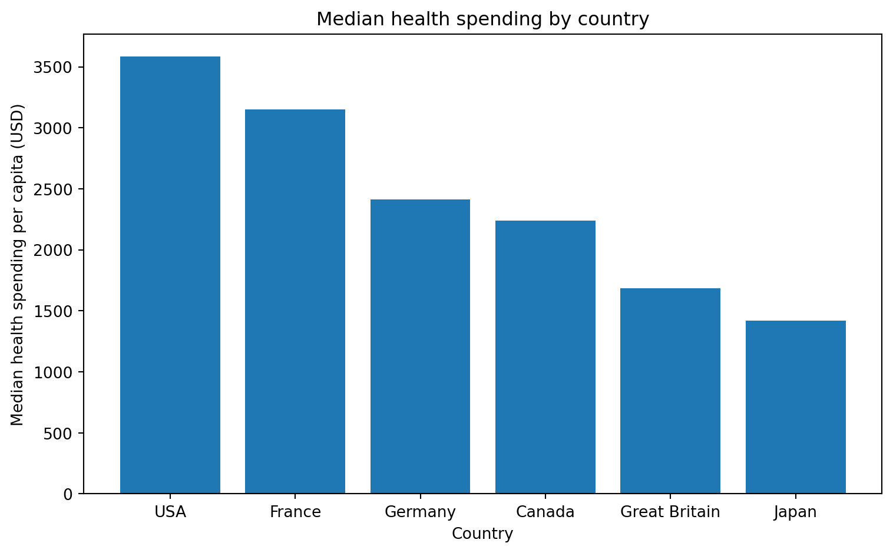
Using the median instead of the mean is a small change mechanically, but it can matter for skewed data — a country whose spending grew sharply in only the most recent years might have a mean pulled upward relative to its typical (median) spending level across the full time period.
🟡 Practice
Exercise 4.11.4
This exercise combines the line chart and scatter plot from the two first warm-up exercises into a single figure with two panels side by side — a different chart type in each panel, rather than the same chart type repeated across panels as in Topic 4.8.
import pandas as pdimport matplotlib.pyplot as plturl ="https://raw.githubusercontent.com/isabelhovdahl/skl401/refs/heads/master/data/FRED/FRED_monthly_2010.csv"fred = pd.read_csv(url)
Create a Figure with a 1x2 grid of panels, figsize=(14, 5).
In the first panel, plot UNRATE against DATE as a line chart, with axis labels and a title.
In the second panel, plot UNRATE against FEDFUNDS as a scatter plot, with axis labels and a title.
Add an overall title for the figure using fig.suptitle().
What does having these two charts side by side let you see that either chart alone would not?
Solution
import pandas as pdimport matplotlib.pyplot as plturl ="https://raw.githubusercontent.com/isabelhovdahl/skl401/refs/heads/master/data/FRED/FRED_monthly_2010.csv"fred = pd.read_csv(url)fred["DATE"] = pd.to_datetime(fred["DATE"])fred = fred.sort_values("DATE").reset_index(drop=True)fig, axes = plt.subplots(nrows=1, ncols=2, figsize=(14, 5))axes[0].plot(fred["DATE"], fred["UNRATE"])axes[0].set_xlabel("Year")axes[0].set_ylabel("Unemployment rate (%)")axes[0].set_title("Unemployment over time")axes[1].scatter(fred["UNRATE"], fred["FEDFUNDS"])axes[1].set_xlabel("Unemployment rate (%)")axes[1].set_ylabel("Federal funds rate (%)")axes[1].set_title("Unemployment vs federal funds rate")fig.suptitle("Unemployment in the 2010s: over time and against interest rates")plt.tight_layout()plt.show()
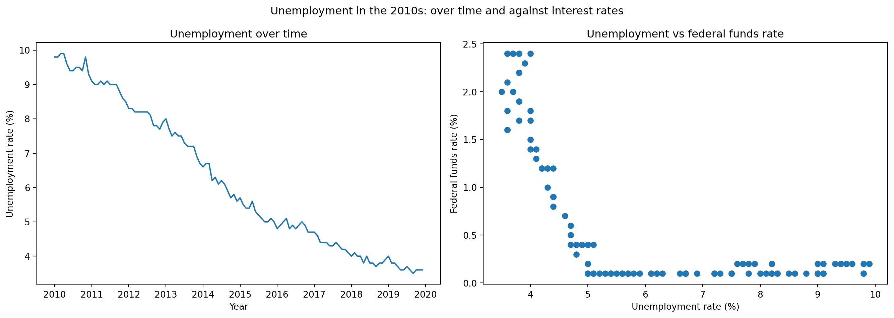
Neither of these panels needs to show the same variable pairing to still work together well: plt.subplots() does not require the panels to be the same chart type or even share a variable, since each Axes is independent once created. The left panel shows when unemployment was high or low across the decade, while the right panel shows how unemployment relates to interest rate decisions, independent of time. Seeing them together makes it easier to connect a specific period (for example, the high-unemployment early 2010s) to where those months fall on the scatter plot — something that would require mentally cross-referencing two separate charts if they were not placed side by side.
Exercise 4.11.5
The flights dataset can be reshaped into both long and wide format. This exercise builds the same multi-line chart from each shape, using a different technique for each.
Filter flights to the three years listed in years. Create a Figure and Axes with figsize=(9, 5), then use a for loop over years to plot each year’s passengers by month as its own line, with a legend.
Using the wide format.
Use .pivot() to reshape flights to wide format, with month as the index and year as the columns. Reindex the result with reindex() using month_order so the months are in calendar order.
Select just the three columns in years and call .plot() directly on the result to produce the same multi-line chart in a single line of code.
Comparing the two.
Which approach required more code? Which approach would scale better if you wanted to plot 20 years instead of 3?
Solution
import pandas as pdimport matplotlib.pyplot as pltflights = pd.read_csv("data/flights.csv")years = [1950, 1955, 1960]month_order = ["Jan", "Feb", "Mar", "Apr", "May", "Jun","Jul", "Aug", "Sep", "Oct", "Nov", "Dec"]# 1. Long format with a loopsubset = flights[flights["year"].isin(years)]fig, ax = plt.subplots(figsize=(9, 5))for year in years: group = subset[subset["year"] == year] ax.plot(group["month"], group["passengers"], label=str(year))ax.set_xlabel("Month")ax.set_ylabel("Passengers")ax.set_title("Monthly passengers (long format, loop)")ax.legend()plt.tight_layout()plt.show()
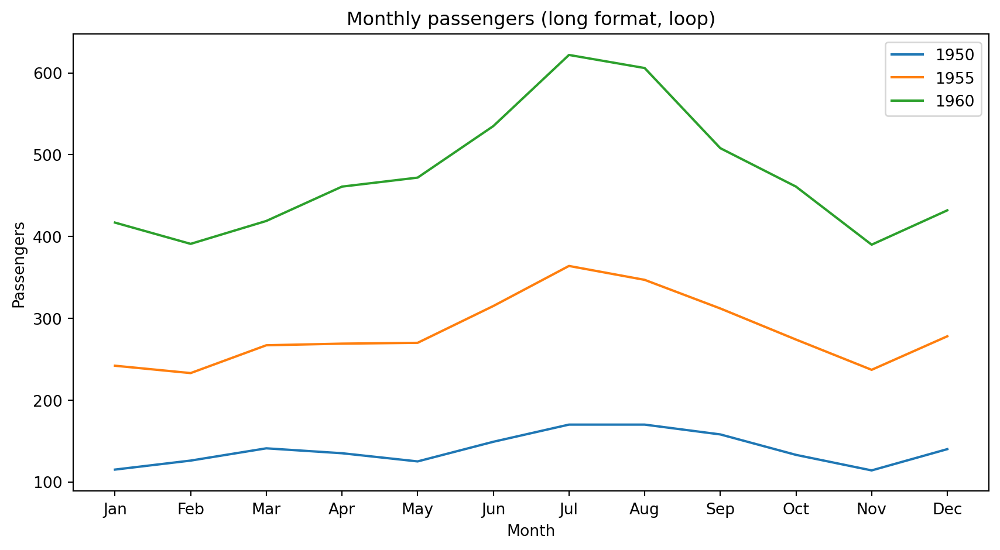
# 2-3. Wide format with a single .plot() callflights_wide = flights.pivot(index="month", columns="year", values="passengers")flights_wide = flights_wide.reindex(month_order)ax = flights_wide[years].plot(figsize=(9, 5))ax.set_xlabel("Month")ax.set_ylabel("Passengers")ax.set_title("Monthly passengers (wide format, single call)")plt.tight_layout()plt.show()
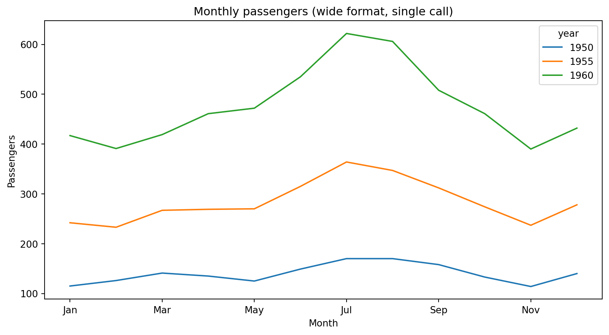
The long-format approach required a separate filtering step and a for loop with an explicit label= on each iteration. The wide-format approach needed a one-time reshape, but then plotted all three years in a single call, with the legend generated automatically from the column names. If you wanted to plot 20 years instead of 3, the loop-based long-format approach would need no code changes beyond the year list — but the wide-format approach would only need flights_wide[my_20_years].plot(), which is arguably even simpler. The real cost of the wide-format approach is the reshape itself; once paid, plotting becomes trivial for any number of columns.
Exercise 4.11.6
This exercise contrasts two ways of building a multi-panel grid, using FRED monthly data — one panel per variable (a column), rather than one panel per group.
import pandas as pdimport matplotlib.pyplot as plturl ="https://raw.githubusercontent.com/isabelhovdahl/skl401/refs/heads/master/data/FRED/FRED_monthly_2010.csv"fred = pd.read_csv(url)variables = ["CPI", "UNRATE", "FEDFUNDS", "LFPART"]
Building the grid manually.
Create a Figure with a 2x2 grid of panels, figsize=(12, 8), and flatten the Axes array. Loop over variables with enumerate(), plotting DATE against each variable in its own panel, with the variable name as that panel’s title.
Building the same grid with pandas.
Set DATE as the index of fred. Then select the four columns in variables and call .plot() with subplots=True directly on the result.
Comparing the two.
How many lines of code did each approach take? Which approach would you reach for if you just wanted a quick look at your data, and which would you reach for if you needed to customize each panel individually (different colors, annotations, or reference lines per panel)?
Solution
import pandas as pdimport matplotlib.pyplot as pltimport pandas as pdimport matplotlib.pyplot as plturl ="https://raw.githubusercontent.com/isabelhovdahl/skl401/refs/heads/master/data/FRED/FRED_monthly_2010.csv"fred = pd.read_csv(url)fred["DATE"] = pd.to_datetime(fred["DATE"])fred = fred.sort_values("DATE").reset_index(drop=True)variables = ["CPI", "UNRATE", "FEDFUNDS", "LFPART"]# 1. Manual matplotlib grid, looping over columnsfig, axes = plt.subplots(nrows=2, ncols=2, figsize=(12, 8))axes = axes.flatten()for i, col inenumerate(variables): axes[i].plot(fred["DATE"], fred[col]) axes[i].set_title(col)plt.tight_layout()plt.show()
The pandas version takes a single line of plotting code, compared to five lines (the grid setup, the flatten, and the loop) for the manual version — a clear demonstration of how cumbersome even a simple multi-panel chart becomes in matplotlib once you have already reshaped your data. For a quick first look at several variables, the pandas shortcut is clearly faster. However, the manual matplotlib version gives you a named ax for each panel individually, making it easy to add a different reference line, colour, or annotation to just one panel — something that is much harder to do cleanly once .plot(subplots=True) has already built the grid for you.
Exercise 4.11.7
Combine histograms and overlapping distributions using the gapminder dataset, in the spirit of the mean/median reference line exercises from Topic 4.6.
import pandas as pdimport matplotlib.pyplot as pltgapminder = pd.read_csv("data/gapminder.csv")gapminder_2007 = gapminder[gapminder["year"] ==2007]
Create a Figure and Axes with figsize=(9, 6). Plot a histogram of lifeExp for all countries in gapminder_2007, with bins=20, alpha=0.3, and label="All countries".
Add a vertical reference line at the global mean life expectancy using ax.axvline(), with label="Global mean".
Filter gapminder_2007 to "Asia" and to "Europe" separately. Overlay both continents’ life expectancy distributions on the same Axes, each with bins=20, alpha=0.5, and an appropriate label=.
Add axis labels, a title, and call ax.legend().
How does the spread of life expectancy within Europe compare to the spread within Asia? Where does the global mean fall relative to each continent’s distribution?
Europe’s distribution is tightly clustered at high life expectancy values with little spread, while Asia’s distribution is much wider, ranging from relatively low to relatively high life expectancy across its many countries. The global mean falls below the smallest value observed in Europe but within Asia’s cluster, reflecting that a meaningful share of Asian countries still had lower life expectancy than the world average in 2007.
Exercise 4.11.8
This exercise introduces the box plot — a chart type not covered in the videos — for comparing distributions across groups more compactly than overlapping histograms.
import pandas as pdimport matplotlib.pyplot as plttitanic = pd.read_csv("data/titanic.csv")
Look up the documentation for ax.boxplot() (for example by running help(plt.boxplot) or searching online). Unlike ax.hist() or ax.scatter(), it does not take a single column directly — it expects a list where each element is the data for one group. Build this list for fare, with one array per passenger class.
Create a Figure and Axes with figsize=(8, 6), and call ax.boxplot() on the list you built. Use the tick_labels= parameter to label each box with its class number.
Add axis labels and a title.
A box plot shows the median, the interquartile range (the box), and outlier points individually. Compare what this chart shows about first-class fares to what the overlapping histogram approach from Topic 4.6 would have shown. What does the box plot make easier to see, and what does it hide that a histogram would show?
Solution
import pandas as pdimport matplotlib.pyplot as plttitanic = pd.read_csv("data/titanic.csv")# 1. Build one array of fares per classclasses =sorted(titanic["pclass"].unique())fare_by_class = [titanic[titanic["pclass"] == c]["fare"] for c in classes]
# 2-3. Box plotfig, ax = plt.subplots(figsize=(8, 6))ax.boxplot(fare_by_class, tick_labels=[str(c) for c in classes])ax.set_xlabel("Passenger class")ax.set_ylabel("Fare")ax.set_title("Fare distribution by passenger class")plt.tight_layout()plt.show()
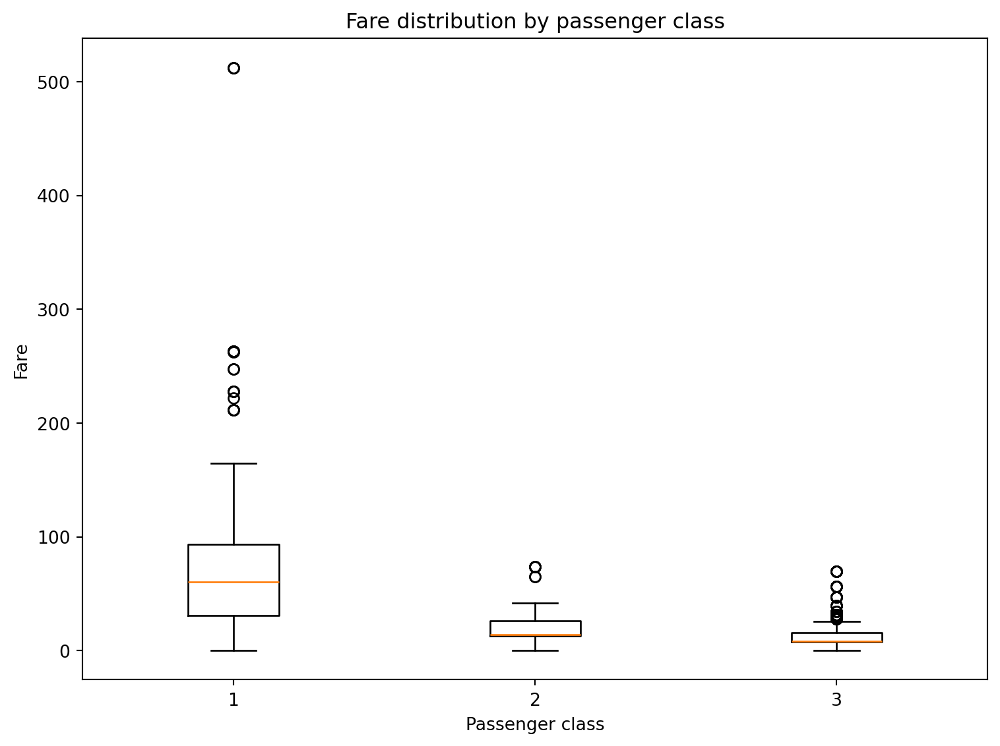
Task 1:ax.boxplot() expects a sequence of array-like objects, one per box, rather than a single column with a separate grouping variable — this is a genuinely different data shape than every other chart type covered so far in this topic, which is why building the list explicitly is the key first step.
Task 4: The box plot makes it very easy to compare the median fare and the spread of the middle 50% of passengers across the three classes at a glance, and it flags individual outliers (very high first-class fares) as separate points rather than folding them into the shape of a histogram. What it hides is the overall shape of the distribution within each group — you cannot tell from a box plot whether a class’s fares are unimodal, bimodal, or evenly spread within its box, something an overlapping histogram would show directly.
🔴 Challenge
Exercise 4.11.9
This exercise introduces twin axes — a matplotlib feature not covered in the videos, and one that is genuinely awkward to reproduce using pandas’ .plot() alone, since it involves two independently scaled y-axes.
import pandas as pdimport matplotlib.pyplot as plturl ="https://raw.githubusercontent.com/isabelhovdahl/skl401/refs/heads/master/data/FRED/FRED_monthly_2010.csv"fred = pd.read_csv(url)
UNRATE and FEDFUNDS are both percentages, but on very different scales — plotting them on the same y-axis would flatten one of them almost to a flat line.
Look up the documentation for ax.twinx() (for example by searching “matplotlib twinx”). What does it return, and how does it relate to the original Axes?
Create a Figure and Axes with figsize=(10, 5). Plot UNRATE against DATE on the original Axes, coloured blue, with the y-axis labeled “Unemployment rate (%)” in blue (use ax.set_ylabel(..., color="tab:blue") and ax.tick_params(axis="y", labelcolor="tab:blue")).
Create a second Axes using ax.twinx() and plot FEDFUNDS against DATE on it, coloured red, with its own y-axis labeled and coloured to match.
Add a title to the original Axes.
Try to imagine building this exact chart using only fred.plot() with a single call. What would go wrong, and why does this chart type push you back toward matplotlib directly?
Solution
import pandas as pdimport matplotlib.pyplot as plturl ="https://raw.githubusercontent.com/isabelhovdahl/skl401/refs/heads/master/data/FRED/FRED_monthly_2010.csv"fred = pd.read_csv(url)fred["DATE"] = pd.to_datetime(fred["DATE"])fred = fred.sort_values("DATE").reset_index(drop=True)fig, ax1 = plt.subplots(figsize=(10, 5))ax1.plot(fred["DATE"], fred["UNRATE"], color="tab:blue")ax1.set_ylabel("Unemployment rate (%)", color="tab:blue")ax1.tick_params(axis="y", labelcolor="tab:blue")ax2 = ax1.twinx()ax2.plot(fred["DATE"], fred["FEDFUNDS"], color="tab:red")ax2.set_ylabel("Federal funds rate (%)", color="tab:red")ax2.tick_params(axis="y", labelcolor="tab:red")ax1.set_title("Unemployment vs federal funds rate, 2010–2019")plt.tight_layout()plt.show()
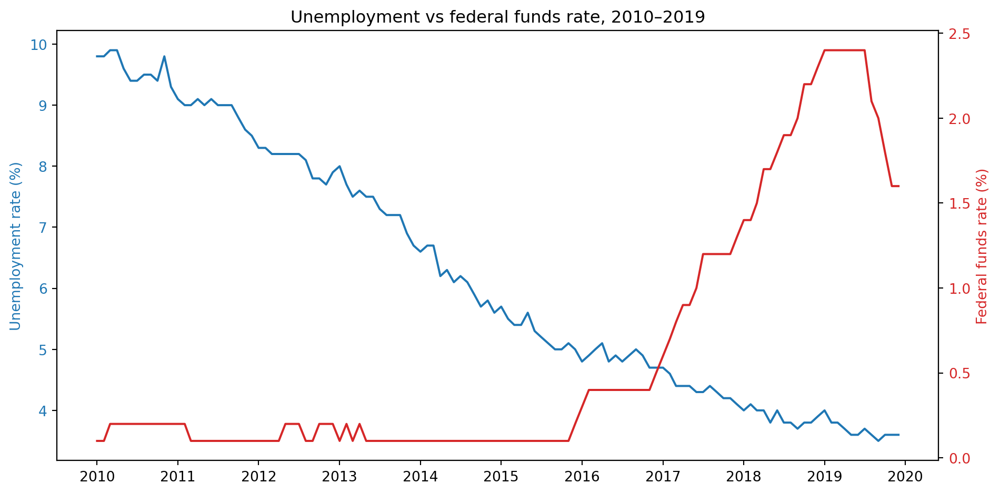
Task 1:ax.twinx() creates a new Axes that shares the same x-axis as the original but has its own independent y-axis, drawn on the right-hand side of the chart. This lets you plot two series with very different scales on the same chart without one flattening the other.
Task 5: A single fred.plot() call has no built-in way to say “put this column on a second, independently scaled y-axis” — .plot() either puts every selected column on the same shared y-axis, or splits them into entirely separate panels with subplots=True. Neither option achieves what twinx() does: two series, same x-axis, same panel, genuinely different y-scales. This is a case where the convenience of pandas plotting runs out, and dropping down to matplotlib directly is the only practical option.
Exercise 4.11.10
This exercise combines .resample() (introduced in the Topic 3) with proper date-axis formatting from Topic 4.7.
import pandas as pdimport matplotlib.pyplot as pltimport matplotlib.dates as mdatesbase_url ="https://raw.githubusercontent.com/isabelhovdahl/skl401/refs/heads/master/data/FRED/"decades = [1950, 1960, 1970, 1980, 1990, 2000, 2010]
Import the FRED monthly data for all seven decades from the urls using the same loop-based import pattern you used in the Topic 3 further exercises.
Combine the seven decade files into a single DataFrame, convert DATE to datetime, and sort chronologically.
Resample the data to compute the annual mean CPI across the full 1950–2019 period.
Plot the resulting annual CPI series as a line chart with figsize=(12, 5).
Format the x-axis so that a tick appears every 10 years, labeled with just the 4-digit year. Look up mdates.YearLocator() and mdates.DateFormatter() in the documentation to find the right approach.
Add a horizontal reference line at CPI = 100, since the CPI series is indexed so that the average over 1982–1984 equals exactly 100. Add axis labels, a title, and a legend identifying the reference line.
Around which years does the line cross the reference value of 100? Does this match what you would expect, given how the index is defined?
Hint
For step 2, set DATE as the index and use .resample("YE") (year-end) together with .mean() to compute the annual mean CPI. For step 4, mdates.YearLocator(10) passed to ax.xaxis.set_major_locator() places a tick every 10 years, and mdates.DateFormatter("%Y") passed to ax.xaxis.set_major_formatter() formats each tick as a plain year. For step 5, use ax.axhline() — not ax.axvline() — since you are marking a fixed value on the y-axis (CPI = 100), not a fixed date.
Solution
import pandas as pdimport matplotlib.pyplot as pltimport matplotlib.dates as mdatesbase_url ="https://raw.githubusercontent.com/isabelhovdahl/skl401/refs/heads/master/data/FRED/"decades = [1950, 1960, 1970, 1980, 1990, 2000, 2010]fred_dfs = [pd.read_csv(base_url +f"FRED_monthly_{d}.csv") for d in decades]fred = pd.concat(fred_dfs).reset_index(drop=True)fred["DATE"] = pd.to_datetime(fred["DATE"])fred = fred.sort_values("DATE").reset_index(drop=True)# 2. Resample to annual mean CPIfred_indexed = fred.set_index("DATE")annual_cpi = fred_indexed["CPI"].resample("YE").mean()
# 3-5. Plot with formatted date axis and reference linefig, ax = plt.subplots(figsize=(12, 5))ax.plot(annual_cpi.index, annual_cpi.values)ax.xaxis.set_major_locator(mdates.YearLocator(10))ax.xaxis.set_major_formatter(mdates.DateFormatter("%Y"))ax.axhline(100, color="gray", linestyle="--", label="CPI = 100 (1982–84 baseline)")ax.set_xlabel("Year")ax.set_ylabel("CPI (1982–84 = 100)")ax.set_title("US Consumer Price Index, 1950–2019")ax.legend()plt.tight_layout()plt.show()
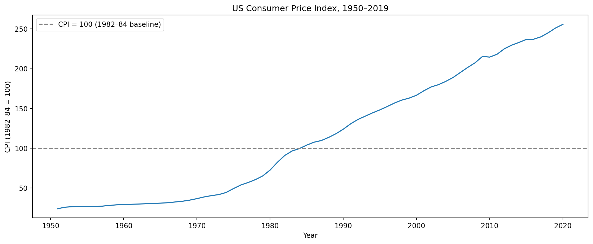
The line crosses CPI = 100 right around 1982–1984 — exactly matching the definition of the index. This makes sense: since the index is defined so that the average across 1982–1984 equals 100, the CPI series must pass through (or very near) 100 during that exact period, and values before it are below 100 while values after it are above 100.
mdates.YearLocator(10) and mdates.DateFormatter("%Y") give you control over the tick spacing and format that matplotlib would otherwise choose automatically — useful whenever the default date-axis ticks are too sparse, too dense, or formatted in a way that doesn’t suit the chart.
Exercise 4.11.11
This exercise introduces the stacked bar chart — a chart type not covered in the videos, built using the bottom= parameter of ax.bar().
import pandas as pdimport matplotlib.pyplot as plttitanic = pd.read_csv("data/titanic.csv")
Use groupby on ["pclass", "survived"] and .size() to count passengers in each combination. Use .unstack() to reshape the result so survived (0 and 1) become separate columns, one per outcome.
Look up the documentation for the bottom= parameter of ax.bar(). Create a Figure and Axes with figsize=(7, 5). Plot the “died” counts as a first bar layer with ax.bar(). Plot the “survived” counts as a second layer on top of the first, using bottom= set to the “died” values so the second layer stacks rather than overlaps.
Add axis labels, a title, and a legend distinguishing the two layers.
In which class does the “died” segment take up the largest share of the total bar? In which class is it smallest?
Hint
After .unstack(), you will have a DataFrame with one column for survived=0 and one for survived=1. Passing the survived=0 column as bottom= when plotting the survived=1 column tells matplotlib to start the second layer’s bars where the first layer’s bars end, rather than starting from zero.
Solution
import pandas as pdimport matplotlib.pyplot as plttitanic = pd.read_csv("data/titanic.csv")# 1. Counts by class and survival, reshaped widecounts = titanic.groupby(["pclass", "survived"]).size().unstack()print(counts)
survived 0 1
pclass
1 80 136
2 97 87
3 372 119
# 2-3. Stacked bar chartdied = counts[0]survived = counts[1]fig, ax = plt.subplots(figsize=(7, 5))ax.bar(counts.index.astype(str), died, label="Died")ax.bar(counts.index.astype(str), survived, bottom=died, label="Survived")ax.set_xlabel("Passenger class")ax.set_ylabel("Number of passengers")ax.set_title("Titanic passenger outcomes by class")ax.legend()plt.tight_layout()plt.show()
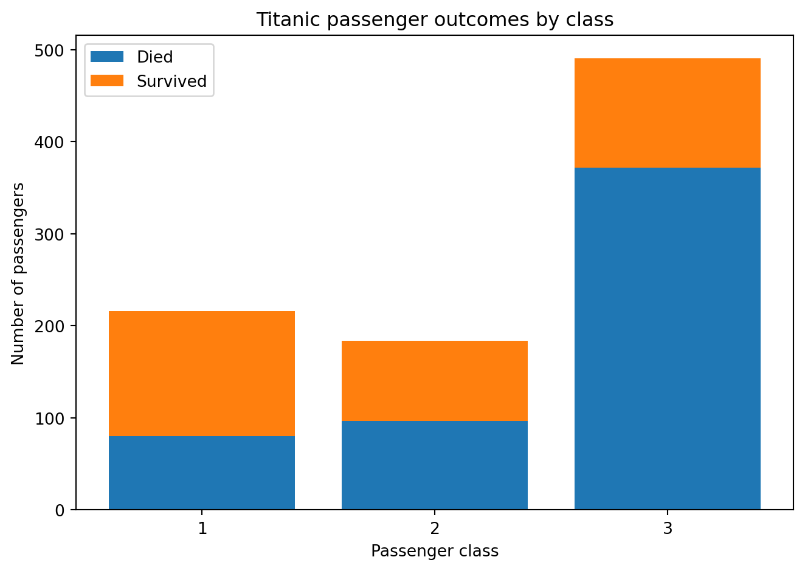
Third class has by far the largest “died” segment, both in absolute count and as a share of its total bar height. First class has the smallest “died” share, with survivors making up the majority of the bar — a visual confirmation of the class-based survival pattern explored numerically throughout this course.
Notice that the stacked bar chart could also have been produced with the simple one-liner .plot() function call: counts.plot(kind='bar', stacked=True, width=0.5).
Exercise 4.11.12
This is a mini-capstone: pose and answer a research question using the FRED monthly data, producing two coordinated, consistently styled figures and saving both to disk. As in the previous exercise, you will need to import and combine the data using the loop-based pattern.
Research question: How did the relationship between unemployment and the federal funds rate differ across the 1970s, 1990s, and 2010s?
Chart 1. Create a 1x3 grid of panels (figsize=(15, 5), sharey=True), one for each of the decades 1970, 1990, and 2010. In each panel, plot both UNRATE and FEDFUNDS over time as two separate lines, using a consistent colour for each variable across all three panels. Give each panel a title naming its decade.
Rather than adding a legend to every panel individually — which would repeat the same two labels three times — figure out how to add a single legend shared by the whole figure instead (search online for “matplotlib subplots shared legend”). Add an overall title for the figure.
Then style the chart:
Format the x-axis so dates are shown as month name and year (e.g. “Jan 1970”) rather than the default, and rotate the tick labels so they do not overlap.
Format the y-axis so each tick label ends with a % sign, since both variables are percentages.
Chart 2. Create a single scatter plot with figsize=(8, 6) of UNRATE (x-axis) against FEDFUNDS (y-axis), with one colour per decade using the same colors as in the first chart, and a legend identifying each decade.
Saving. Save both figures to output/ using fig.savefig() with dpi=300 and bbox_inches="tight".
Interpreting. Based on both charts, does the relationship between unemployment and the federal funds rate look similar across the three decades, or does it differ? In which decade does the Federal Reserve appear to have kept rates high despite relatively high unemployment, and in which decade does the opposite pattern appear?
Hint
For the shared legend: call .get_legend_handles_labels() on just one of the panels (for example axes[0]) to retrieve the handles and labels already defined by its label= arguments, then pass them to fig.legend() instead of calling .legend() on each panel individually.
For the x-axis date formatting, look up mdates.DateFormatter() and use a format code that combines abbreviated month name and year — the codes %b and %Y from earlier date-formatting exercises are relevant here. To rotate tick labels, either ax.tick_params(axis="x", rotation=45) or plt.setp(ax.get_xticklabels(), rotation=45) will work.
For the y-axis percent formatting, look up ticker.StrMethodFormatter() from Topic 4.7 and adjust the format string so it appends a % character after the number.
Solution
import pandas as pdimport matplotlib.pyplot as pltimport matplotlib.dates as mdatesimport matplotlib.ticker as tickerbase_url ="https://raw.githubusercontent.com/isabelhovdahl/skl401/refs/heads/master/data/FRED/"decades = [1950, 1960, 1970, 1980, 1990, 2000, 2010]fred_dfs = [pd.read_csv(base_url +f"FRED_monthly_{d}.csv") for d in decades]fred = pd.concat(fred_dfs).reset_index(drop=True)fred["DATE"] = pd.to_datetime(fred["DATE"])fred = fred.sort_values("DATE").reset_index(drop=True)fred["decade"] = (fred["DATE"].dt.year //10) *10COLOURS = {"UNRATE": "tab:blue", "FEDFUNDS": "tab:red"}decades_to_compare = [1970, 1990, 2010]# Chart 1: multi-panel with shared legend and styled axesfig, axes = plt.subplots(nrows=1, ncols=3, figsize=(15, 5), sharey=True)for i, dec inenumerate(decades_to_compare): sub = fred[fred["decade"] == dec] axes[i].plot(sub["DATE"], sub["UNRATE"], color=COLOURS["UNRATE"], label="Unemployment rate") axes[i].plot(sub["DATE"], sub["FEDFUNDS"], color=COLOURS["FEDFUNDS"], label="Fed funds rate") axes[i].set_title(f"{dec}s") axes[i].xaxis.set_major_formatter(mdates.DateFormatter("%b %Y")) axes[i].xaxis.set_major_locator(mdates.YearLocator(2)) plt.setp(axes[i].get_xticklabels(), rotation=45, ha="right")axes[0].set_ylabel("Percent")axes[0].yaxis.set_major_formatter(ticker.StrMethodFormatter("{x:.0f}%"))handles, labels = axes[0].get_legend_handles_labels()fig.legend(handles, labels, loc="upper center", ncol=2, bbox_to_anchor=(0.5, 1.1))fig.suptitle("Unemployment vs federal funds rate by decade", y=1.2)plt.tight_layout()# fig.savefig("output/01_unemployment_fedfunds_by_decade.png", dpi=300, bbox_inches="tight")plt.show()plt.close()
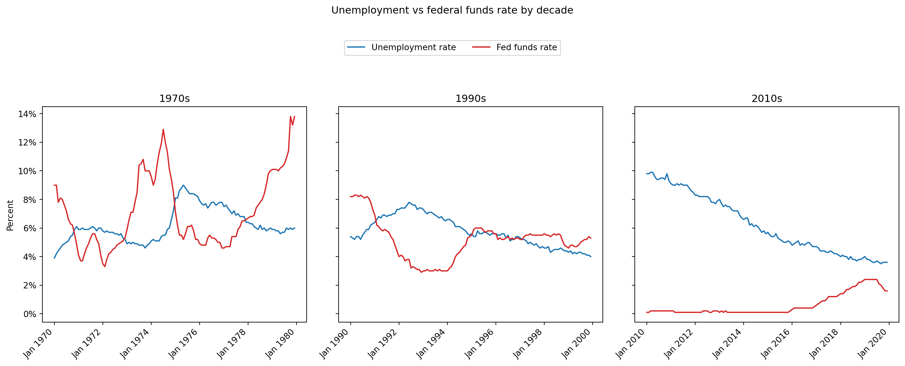
# Chart 2: scatter, one colour per decadefig, ax = plt.subplots(figsize=(8, 6))decade_colours = {1970: "tab:orange", 1990: "tab:green", 2010: "tab:purple"}for dec in decades_to_compare: sub = fred[fred["decade"] == dec] ax.scatter(sub["UNRATE"], sub["FEDFUNDS"], color=decade_colours[dec], alpha=0.6, label=f"{dec}s")ax.set_xlabel("Unemployment rate (%)")ax.set_ylabel("Federal funds rate (%)")ax.set_title("Unemployment vs federal funds rate")ax.legend(title="Decade")plt.tight_layout()# fig.savefig("output/02_unemployment_fedfunds_scatter.png", dpi=300, bbox_inches="tight")plt.show()plt.close()
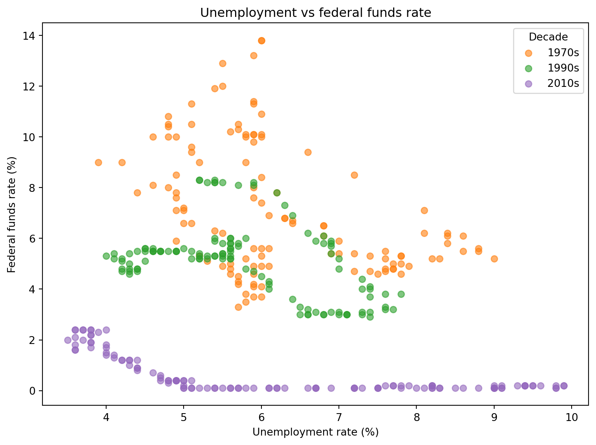
Using axes[0].get_legend_handles_labels() retrieves the line objects and labels already defined in the first panel, so fig.legend() can display one shared legend for the whole figure instead of three repeated, identical per-panel legends — a cleaner result when every panel shares the same two series.
In the 1970s, the federal funds rate and unemployment often rise together, consistent with the “stagflation” period where the Fed raised rates aggressively even as unemployment climbed, to combat runaway inflation. In the 1990s, the relationship looks closer to the more conventional pattern, with rates falling as unemployment falls. In the 2010s, the federal funds rate stays near zero for most of the decade even as unemployment falls substantially — the Fed’s post-financial-crisis policy of keeping rates low for an extended period. The scatter plot makes this contrast especially visible: the 1970s points occupy a region of both high unemployment and high rates, while the 2010s points cluster at low rates across a wide range of unemployment values.